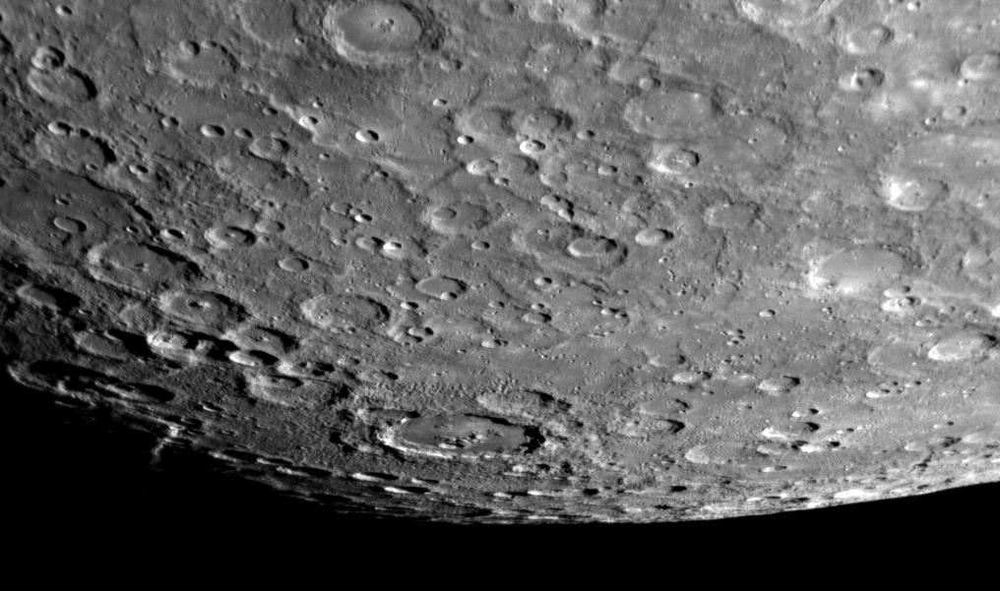

A Merkúr megfigyeléséről szóló feljegyzések az időszámításunk előtti első ezredfordulóig nyúlnak vissza. A 4. század előtt a görög csillagászok két bolygónak gondolták aszerint, hogy napkeltekor vagy napnyugtakor volt látható. Előbbi az Apollón, utóbbi a Hermész (aki a görög mitológiában az istenek hírnöke) nevet kapta. A későbbiekben Püthagorasz ismerte föl, hogy a két bolygó egy és ugyanaz. A bolygó magyar neve a rómaiakig nyúlik vissza, akik a bolygót Mercuriusnak (Hermész római megfelelője) nevezték el.
A Földről nézve látszólag mindig a Nap közelében tartózkodik, attól 28 foknál messzebb nem távolodik el az égen (ez a maximális elongáció), a Holdhoz hasonlóan fázisokat mutat.
Forgástengelye merőleges a pályasíkjára, utóbbi 7 fokos szöget zár be a Föld pályasíkjával. Ezért olyan ritka a Merkúr-átvonulás a Nap korongja előtt (1999. nov. 15., 2003. máj. 7., 2006. nov. 8., 2016. máj. 9., 2019. nov. 19.). Nagyon lassan forog (58,65 nap). A tengelyforgási idejének és a Nap körüli keringési idejének az aránya 2:3 (rezonancia), azaz a bolygó 2 keringés alatt 3 forgást végez. A Merkúrról nézve a Nap két egymást követő delelése között eltelt idő (az ottani 1 nap hossza) épp 2 Merkúr-év, azaz 176 földi nap.
A bolygóról viszonylag kevés információ áll rendelkezésünkre. A Merkúrt meglátogató két űreszköz közül az első a Mariner–10 volt, amely háromszor repült el a közelében 1974-1975-ben, és a bolygó felszínének csupán 45%-át térképezte fel. A második a 2004-ben indított MESSENGER, mely többször elrepült a Merkúr mellett, és szinte az egész felszínről nagy felbontású képeket készített. 2011-benpályára állítják a bolygó körül. Az ESA 2014-ben tervezi elindítani a BepiColombo szondát, amely odaérve részegységekre bomlik és pályára áll körülötte.
A Merkúr a Naphoz a legközelebb mozgó belső bolygó. A legkisebb bolygó a Naprendszerben, két hold, a Ganymedes (Jupiter körül) és a Titan (Szaturnusz körül) is nagyobb nála. Kőzetbolygó (Föld típusú bolygó), a Naprendszerben a második legsűrűbb (5,43 g/cm3) nagy vasmagja miatt. Az aránylag vékony kéreg lehet, hogy egy ősi nagy ütközés következménye.
A Merkúr felszíne a Holdéhoz hasonló: kráterekkel borított fennsíkok és egyenletesebb felszínű vulkanikus síkságok tagolják, de vannak gyűrődések és völgyek is. Felszínén terül el a mintegy 1400 km átmérőjű kör alakú Caloris medence, amely egy hatalmas becsapódás során keletkezhetett. Felszínét földi radarmérésekkel is vizsgálták.
A Merkúr felszínére több mint hatszor annyi sugárzás érkezik a Napból, mint a Földre. A bolygó nappali oldalának hőmérséklete nagyon magas, az éjszakai oldal viszont nagyon hideg. Ennek oka az, hogy nincs légköre, ami kiegyenlíthetné a hőmérsékletet, és a bolygó nagyon lassan forog. Az összes bolygó közül a Merkúr felszínének fényvisszaverő képessége a legkisebb.
Anyagi, kémiai összetételét tekintve a Merkúr Föld típusú bolygó. Sűrűsége közel azonos a Földével, vastartalma a Földének nagyjából a kétszerese lehet. A vas-nikkel mag a bolygó sugarának nagyjából a 75%-át teszi ki. Ez a mag képviseli a bolygó tömegének a 80%-át. Korábban úgy gondolták, hogy a belseje kihűlt, az újabb modellek szerint viszont a külső mag még olvadt állapotban van. Ennek ellenére a Merkúr mágneses terének erőssége a földinek csupán 1%-a, valószínűleg a lassú forgás miatt.